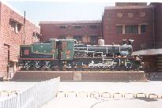
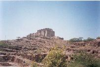
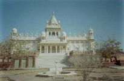
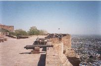
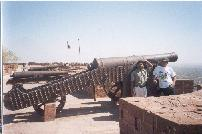
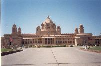
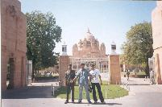
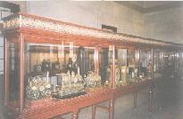
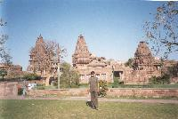

All images are protected by copyright. Consult the copyright page for more information. No images may be reproduced without the consent of the respective copyright holders unless mentioned otherwise.
After we'd arrived in Jodhpur, we had to find a place to rest for a while and  wash up. We went around looking for cheap hotels, but didn't like the look of most of them. Finally found a place called Surya guest house right in the centre of town, opposite the cybercafe we had visited earlier in the week. They gave us a bathroom with attached bedroom for Rs. 150, but we could only stay for two hours. That was enough. While each person had a bath, the rest of us slept.
The owner of the guest house allowed us to leave our bags at the reception for the entire day, so we could roam around the city freely. He got us a rickshaw to take us first for breakfast and then around the city for Rs.200. We had Kadi Kachoris for breakfast. They were very tasty and we each had three.
  After breakfast we went to Mehrangar fort and Jaswant Tada. Jaswant Tada is a memorial for Maharaja Jaswant Singh, and Mehrangar is where he defended his kingdom.
The fort is huge, and mainly converted into a museum that goes up four levels. You can see the entire city from there. Early in the 20th century, the Maharaja moved to a new palace - the only one in the world to be built in the 20th century. One of the windows in the fort points directly at this new palace.
  On the ramparts are mounted 21 cannons of different types and sizes. One of the canons was taller than Jacob. You can see the entire city of Jodhpur from there, and it's quite a maze.
There were plenty of French tourists here too. Here's some more pics from the fort and Jaswant Tada:
 After the fort, we headed to Umed Bhavan - the new palace. The Maharaja still lives there, and entertains guests in the lawns. Half the palace  has been converted into a hotel that's maintained by the Welcome Group, while a small portion is converted into a museum. It contains the Maharaja's huge clock collection, his silverware, some chinaware, and his polo trophies. I guess it could double up as a store room as well - where he keeps all the stuff he isn't using right now.
For lunch we went to a place called Bhavani Ghar. They serve only one dish. Daal Bati Churma. And they make a profit from it. We each had three batis -  they were huge - with moong daal, and 60 grams of ghee. Two churma laddus were split amongst us. Three of us had Chaas - served in Thums Up bottles.
What struck us most about Bhavani Ghar was the water. After the salty water that we were used to, it was surprisingly sweet. The waiter told us that they got it from the Kaliana lake just outside the city. We filled our bottles with that water.
From here on, we decided to use local bus transport to get around. Our next stop was Mandore - a park with loads of monkeys. We had a short afternoon nap here - no room see - and then roamed around. There's cenotaphs here too, but we didn't know of whom. They also have some sort of amusement park in there, but we didn't go in.
 We then spent some time walking around Mandore aimlessly and sending SMSes back home. Finally got into a city bus to get back to the city. The city bus service in Jodhpur is interesting. The bus frequency is quite high, and when a bus reaches a stop, it will wait there until the next bus arrives. Each bus can seat about 18 people, and have a few standees.
Once we got back to the city, we went to a cybercafe - a different one - to clean up our mail boxes and basically find out if anyone at work needed us back. Nothing. Good. We spent an hour there, watching Glenn McGrath take 7 Namibian wickets, and then Andy Bichel get into his rhythm which was to later destroy England.
We then went across the road because Jacob needed to start a Juti shop in Bombay. He bought over half a dozen pairs of shoes and several camels. We hung around the shopping centre till they closed and then went to hotel Poonam for dinner - a two minute walk away. We had veg pulao and kashmiri pulao, but it wasn't very good.
After dinner, went back to Surya to pick up our bags and head for the bus station. The good thing about being in the city centre is that everything is just across the road. The city bus stop was there too, so we caught a bus to the Roadways bus stand. That's when Mehta realised that he didn't have his cap with him. He ran back to Poonam, and found it there.
Our bus for Udaipur was to leave at 10:30, and it was empty. It was to arrive at 5am, but was early
{kind=link}
{kind=link}
{kind=link}
{kind=link}
{kind=link}
{kind=link}
{kind=link}
{kind=link}
{kind=link}
{kind=link}
{kind=link}
{kind=link}
{kind=link}